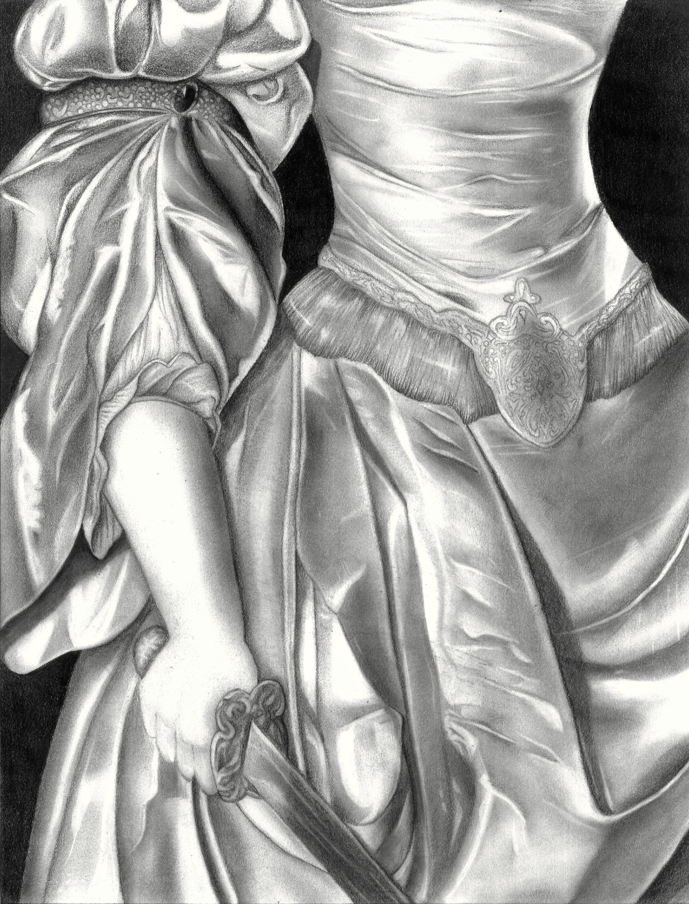
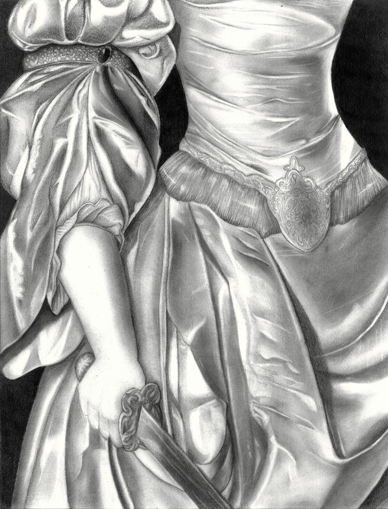

Ja sam Viktorija Grdur, studentica sam prve godine preddiplomskog studija na Grafičkom fakultetu u Zagrebu. Godine 2023. završila sam Grafičku školu za zanimanje grafičog dizajnera, te upisala Umjetničku akademiju u Splitu. Od malena imam strast za crtanjem i to me prati kroz cijeli život. Na Grafičkom fakultetu mi je najzanimljiviji kolegij Digitalni multimedij 1 jer ima dosta zanimljivih zadataka i projekata. Smatram da će biti jedan od bitnijih kolegija za razvoj vještina u dizajnu. U budućnosti osim što se planiram baviti dizajnom isto tako želim raditi kao i tattoo majstor. Tetoviranje me počelo zanimati u periodu 2., 3. razreda srednje škole, na osnovu toga moj završni rad se bazirao na kalendaru za tattoo studio.


 
